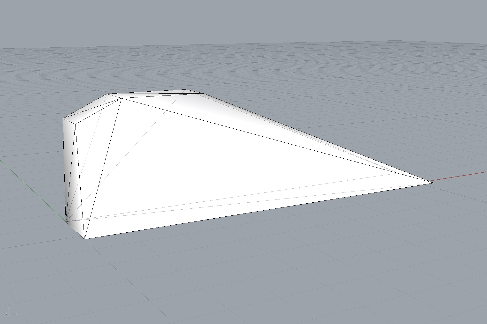

Assembly sequence hull

"""Compute the convex hull of an assembly.
The convex hull is a quick and dirty approximation of a collision mesh.
Note that the function ``assembly_hull_numpy`` can fail when the assembly is much
larger in one direction than in all others.
This is because the function postprocess the obtained hull faces by unifying their
cicle directions to create a consistent, watertight mesh.
The ``unify_cycles`` function uses a nearest neighbors search to speed up the
calculation. However, this will exclude some of the faces from being processed
in the situation described above if the number of neighbors taken into account is
too small.
Note
----
Swith to tree based search only if number of faces exceeds 100?
"""
from __future__ import absolute_import
from __future__ import division
from __future__ import print_function
import os
from compas_rhino.artists import MeshArtist
from compas.datastructures import Mesh
from compas_assembly.datastructures import Assembly
from compas_assembly.datastructures import assembly_hull
# just so Rhino(Mac) gets the filepaths right
HERE = os.path.dirname(__file__)
DATA = os.path.join(HERE, '../data')
PATH = os.path.join(DATA, 'wall_interfaces.json')
# load an assembly from a JSON file
assembly = Assembly.from_json(PATH)
# define a sequence of buildable blocks
sequence = [28, 22, 23, 16, 17, 18, 11, 12, 13, 5, 6, 7, 8, 0, 1, 2, 3, 38]
# hull of the sequence
vertices, faces = assembly_hull(assembly, keys=sequence)
hull = Mesh.from_vertices_and_faces(vertices, faces)
# visualise
artist = MeshArtist(hull, layer="Hull")
artist.clear_layer()
artist.draw_mesh()
artist.redraw()